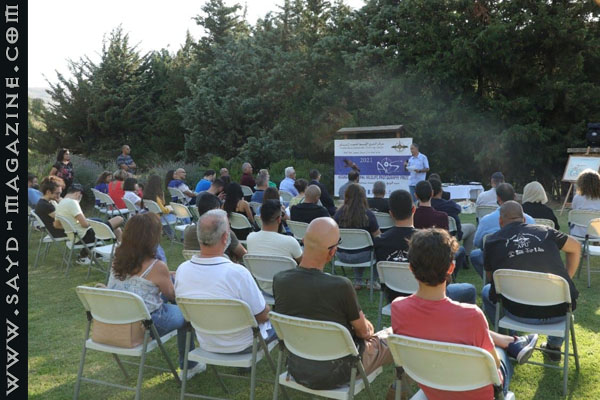
احتفل "مركز الشرق الأوسط للصيد المستدام- MESHC" بعد ظهر الأحد 1 آب 2021 بإختتام مسابقة "جائزة أسعد عادل سرحال لتصوير الحياة البرية AASWPP"، التي كان قد أطلقها بالتعاون مع شركائه المحليين والدوليين، كنشاط بديل للصيادين خارج موسم الصيد عبر "الصيد بالعدسة" ببندقية الكاميرا.. وذلك في مركز مزارع الحمى التابع لـ"جمعية حماية الطبيعة في لبنان- SPNL" في منطقة حمانا. وقد كرّم المركز المشاركين والفائزين معًا لجهودهم في إرساء مفهوم الصيد المسؤول وحماية الطبيعة، وذلك بحضور أكثر من 60 شخص من مختلف المناطق اللبنانية، بينهم رئيسة SPNL عفاف السعيدي، ومشاركة فنية شعرية وموسيقية من الشاعر مارون الماحولي والفنان مرسيل نصر . تحدث في الحفل، الذي قدمته شيرين بو رفول (رئيسة وحدة مكافحة الصيد الجائر- APU التابعة لـ MESHC و SPNL ) مدير عام جمعية حماية الطبيعة في لبنان SPNL/المستشار الدولي للمجلس العالمي للطيور/صاحب الجائزة أسعد سرحال الذي لفت إلى أهمية الشراكة في العمل للوصول إلى الأهداف السامية، وشكر الصيادين المشاركين والمركز على الجهد الكبير في إقامة حفل متعلق بحماية الطيور وسط أصعب ظروف وأزمات يمر فيها لينان على الإطلاق ، مؤكدًا على أن الأمل سيبقى موجودًا ما دام هناك أشخاص يملكون الحلم... ومن جهته أكيد رئيس MESHC/المنسّق الميداني للصيد المسؤول في SPNL/ رئيس تحرير مجلة "صيد" أدونيس الخطيب، أن ابتكار المركز لهذه الجائزة وتسميتها بإسم أسعد عادل سرحال كرمز من رموز الصيد سابقاً والبيئة حالياً، والحائز على جائزة ميدوري العالمية لحماية التنوع البيولوجي من اليابان، أعطى الزخم الكبير، والملفت لهذه الفكرة التي نعتقد أنها الأولى في العالم، حيث يستعمل الصياد بندقية كاميرا لقنص الصورة بطريقة الصيد، وقد وصل هذا التنافس الإيجابي بين الصيادين إلى أكثر من 119000 شخص على صفحة الجائزة في فايسبوك.. كما وشكر الخطيب الصيادين الذين أثبتوا أنهم الرقم الصعب في التغيير، داعيًا القواصين إلى الاقتداء بهم لأجل حماية الطبيعة والهواية.. وفي كلمته تحدث مؤسس دار شيبان للثقافة والفنون سعد شيبان عن ارتباط الفن بالطبيعة وسحرها، وشدد على ضرورة تعليم الجيل الجديد الفنون من رسم وتصوير لأجل تنشئة راقية. ولفت الى ان دار شيبان من اليوم وصاعدا اصبحت على شراكة مع المركز والجمعية وانها في كل معرض ستقيمه سيكون هناك زاوية مجانية لصور الصيادين الذين يصطادون صورهم بالعدسة خارج موسم الصيد وكانت كلمة ترحيبية قبل بدء الاحتفال من قبل رئيس مركز مزارع الحمى في SPNL أندريه بشارة أشار فيها إلى أهمية هذا النشاط، ورأى أنه استكمالاً طبيعيًا لمفهوم الحمى ودور المجتمع المحلي من صيادين وغيرهم في تحمّل مسؤولية مستقبل البيئة، مشيدًا بتجربة بلدية حمانا والحمى فيها الذي أصبح ممرًّا آمنًا بنسبة كبيرة جداً للطيور المهاجرة ..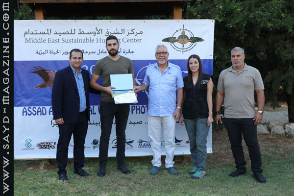
من الحفل.. - فاز في المسابقة التي شارك فيها 13 صياد، في الجائزة الأولى الصياد خليل نعيم 800 دولار أميركي - الجائزة الثانية جاد بو رفول 600 دولار أميركي- الجائزة الثالثة الصيادة هديل حمية 400 دولار أميركي. - قدم MESHC شهادات شكر وتقدير لجميع المشاركين ومجموعة كتب قيمة للطيور والحيوانات والفراشات باللغتين العربية والإنكليزية من مكتبة وإنتاج SPNL. - سلم الشهادات للمشاركين والفائزين إلى جانب سرحال والخطيب وبو رفول وبشارة رئيس جمعية حماية الطيور في لبنان ABCL/مدير قسم الصيد والتصوير البري في مجلة صيد /عضو لجنة الجائزة فؤاد عيتاني.. -تم عرض لوحتَي القواص والصياد للفنان الصياد المختار هادي يزبك للتأكيد على الفوارق والأخلاقيات بينهما.. -بعد تقديم مجموعة كتب خاصة بالطيور والحيوانات للصياد ظافر النخلاوي الذي كان مشاركا في المسابقة ولم يستطع المتابعة بسبب وضع والده الصحي الذي ادى الى وفاته، قدم النخلاوي لسرحال قرني غزال من مزرعته عربون شكر وتقدير. - أسماء الصيادين المشتركين في الجائزة شركاء النجاح: خليل نعيم- جاد بو رفول- هديل حمية- روني خوري - محمد حيمور- تسولاك هرقليان- سامر حلواني- ميلاد خالد- إيلي كرم- ربيع صالحة- أندريه تابت- شادي سعد- طوني بجاني.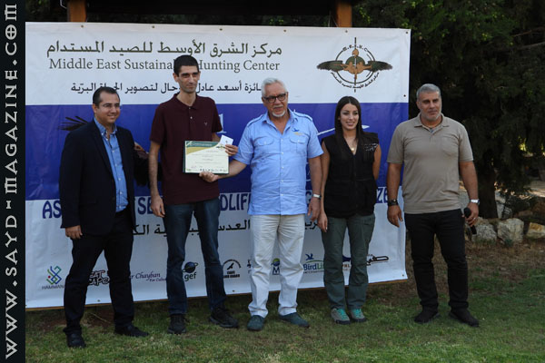
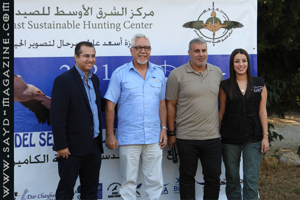
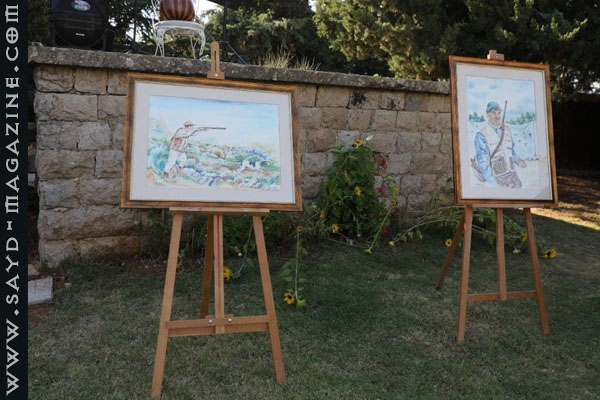
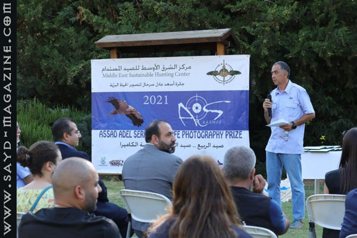
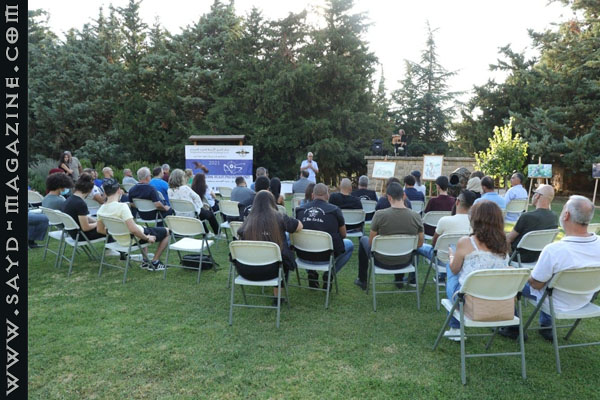
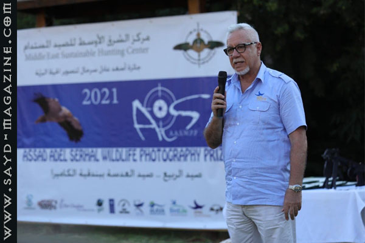
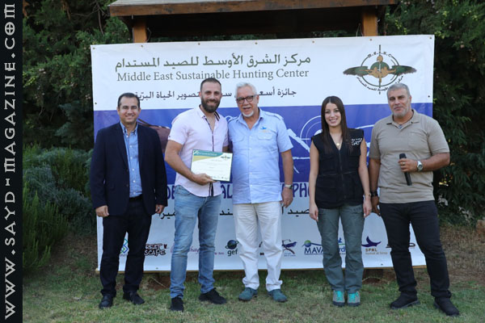
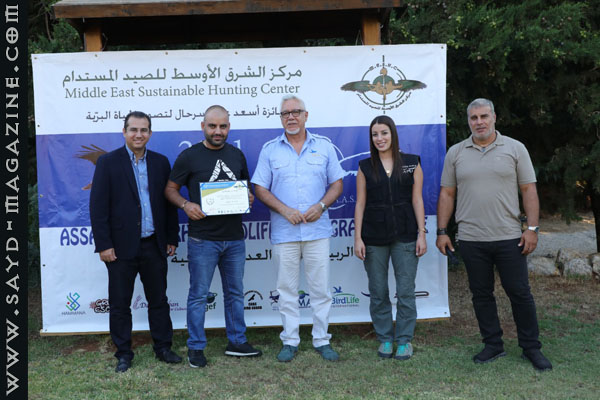
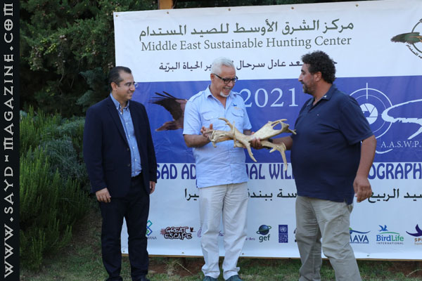
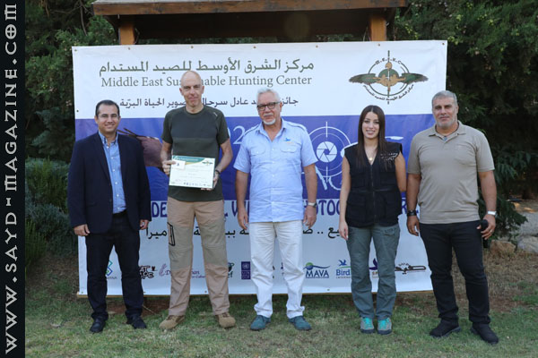
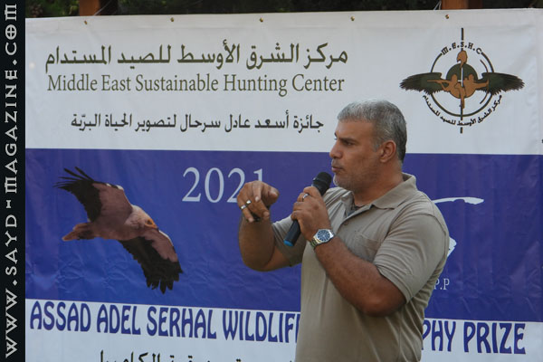
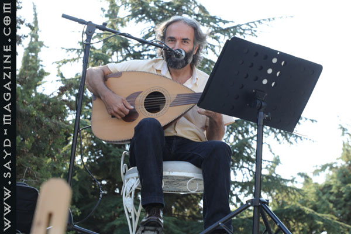
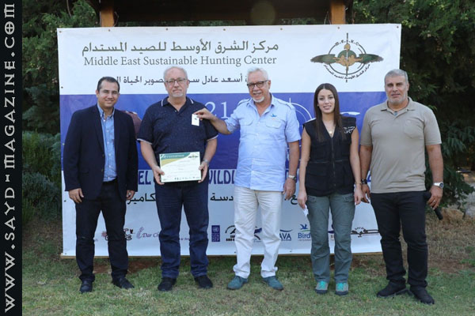
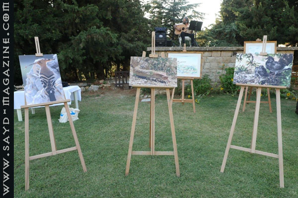
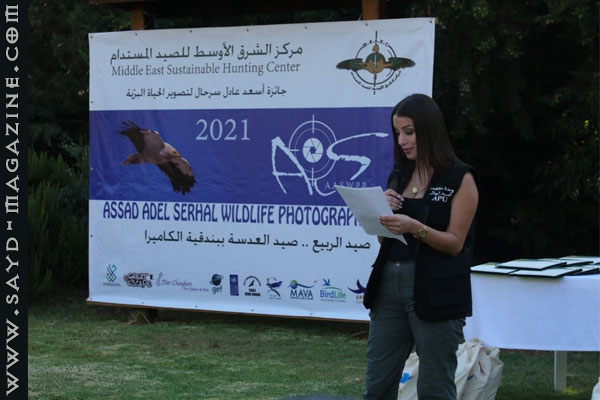
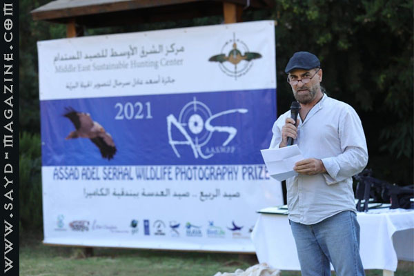
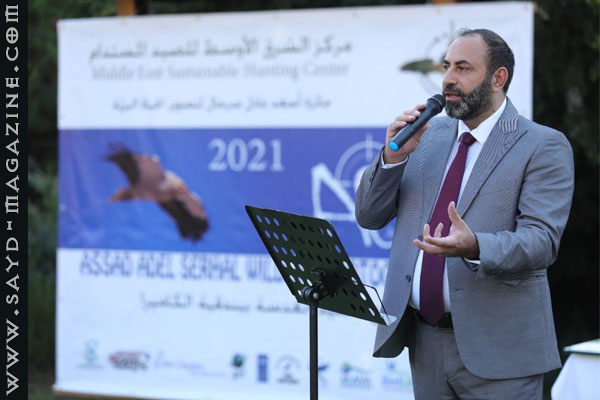
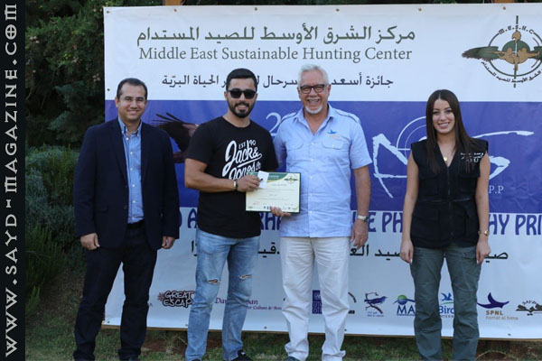
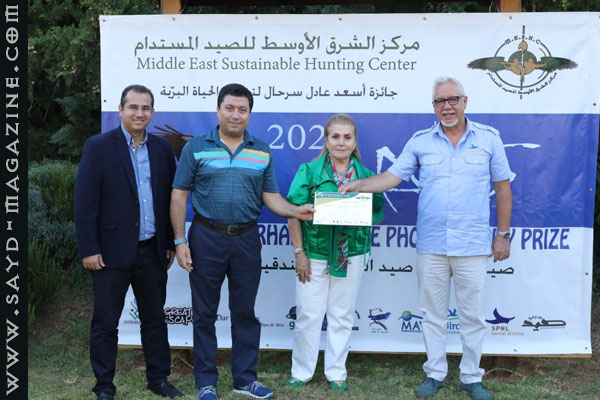
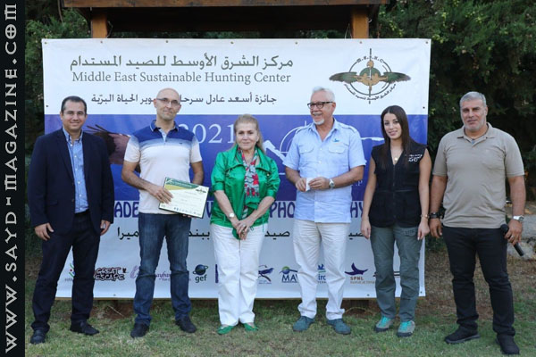
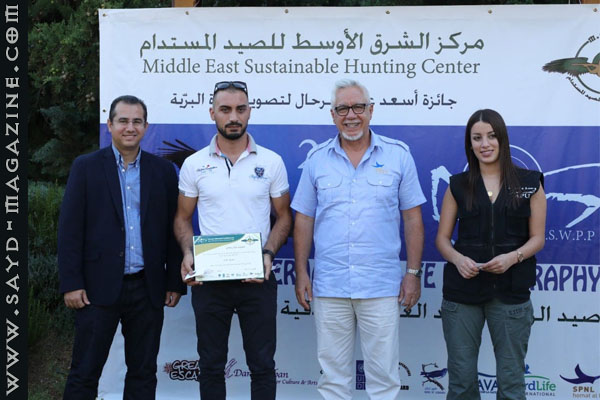